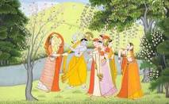

HIMACHAL PRADESH

Kangra painting (Hindi: कांगड़ा चित्रकारी) is the pictorial art of Kangra, named after the Kangra State, a former princely state of Himachal Pradesh, which patronized the art. It became prevalent with the fading of Basohli school of painting in mid-18th century,[1][2] and soon produced such a magnitude in paintings both in content as well as volume, that the Pahari painting school, came to be known as Kangra paintings.[3]
Though the main centres of Kangra paintings are Guler, Basohli, Chamba, Nurpur, Bilaspur and Kangra. Later on this style also reached Mandi, Suket, Kullu, Arki, Nalagarh and Tehri Garhwal (represented by Mola Ram), and now are collectively known as Pahari painting, covering the style that was patronized by Rajput rulers between the 17th and 19th centuries.